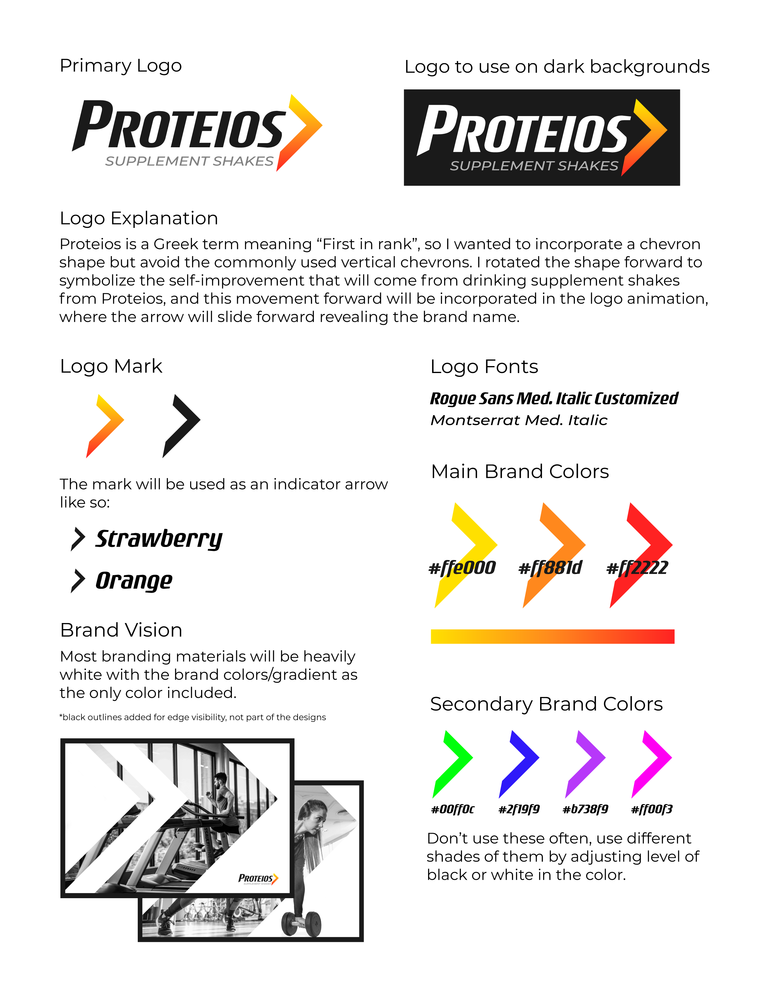

Proteios Shakes is a startup company created by a few NC State graduates that is creating a supplement shake vending machine, similar to the 'Coke Freestyle' fountian drink machines you may see at some restaurants.
Their goal is to sell these machines to gyms for their members to use.
They hired me to create the branding for the company as well as design the UI and UX for their machine and app software. Above is a video of the final UI mockup for the machine, showing the full process of ordering a drink from the machine.
The Branding
I started this project focusing on the brand so I could implement it into the UI I created later. Below is the final brand sheet I provided them explaining everthing created based on the process we went through, as well as the animated version of the logo.

The UI and UX Explained

The UI for the machine was the largest part of the project with Proteios, I was tasked with delivering a mockup of the UI showing the entire process of ordering, as well as layouts for the few pages that were not
used in the selected use case in the video. I had to keep the UI very simple, as all types of people go to the gym we couldn't rely on the user having any technological experience. Everything in the UI is very simple, and the branding is integrated throughout
with the different buttons, sliders, and backgrounds in the machine. There is also the 'Shake Code' function of the software to help speed up the process if the user knows exactly what they want already. This function essentially lets the user either scan a QR code generated
by the Proteios App after creating their shake on their phone, or type in the digits of the code on the machine. We wanted to reduce delays as much as possible while still giving a fully customizable experience each time a patron uses the machine.